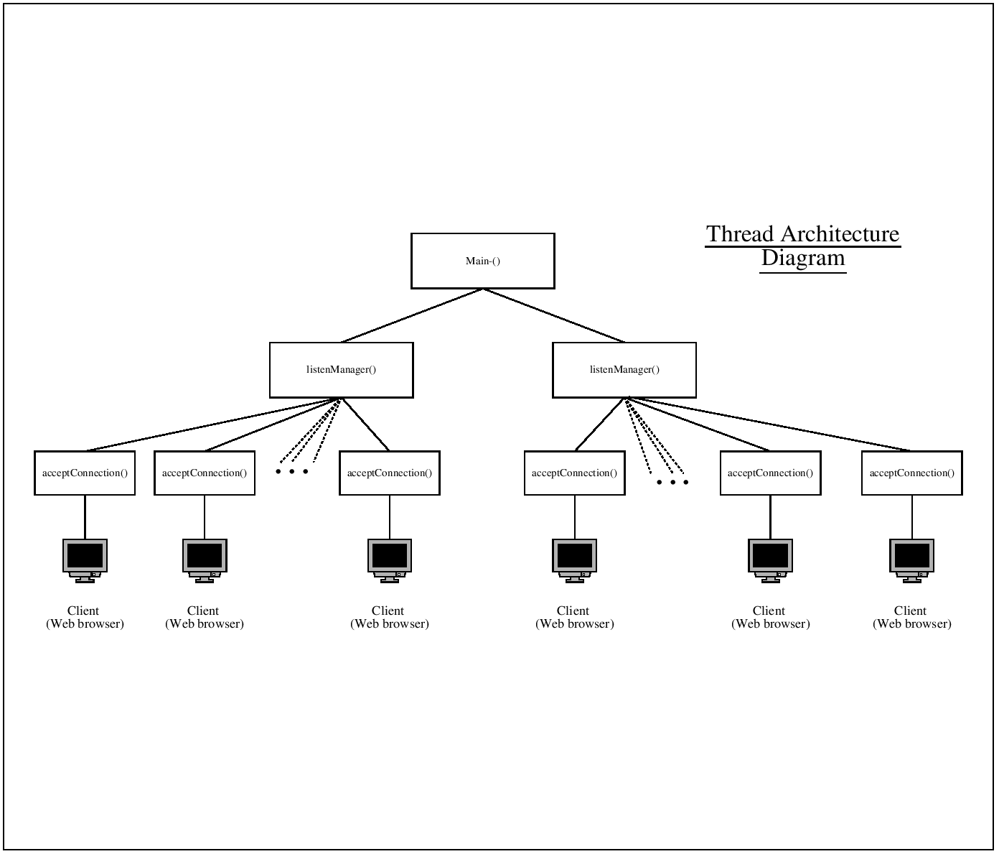

Java Mulithreaded Webserver Test Page

When a web browser attempts to connect to any given server, it issues at GET request for the named resource. The Server will read in the request, and then deliver the response. If you telnet to port 80 on any web server, and issue, for example "GET /index.html", then assuming the page exists, the web browser will return the page preceded by a HTTP protocol header.
Whilst I had some familiarity with this header, I was not sure of the exact details, so looked up the explicit technical details from the W3C2 consortium's web page. The RFC documents on their site, although terse, are both comprehensive and exact.
One important detail of the header specification is that each line must be terminated by a carriage return line feed, CrLF (\n\r). Any given web client expects this when differentiating the lines of the HTTP header that defines the HTTP protocol. Perhaps the most important insight I had was to use the header line "Content-encoding:chunked", since this makes the "Content-length:" field unnecessary - otherwise, you have to specify the exact length (in bytes) of the document you're sending to the client - which is tiresome and awkward.